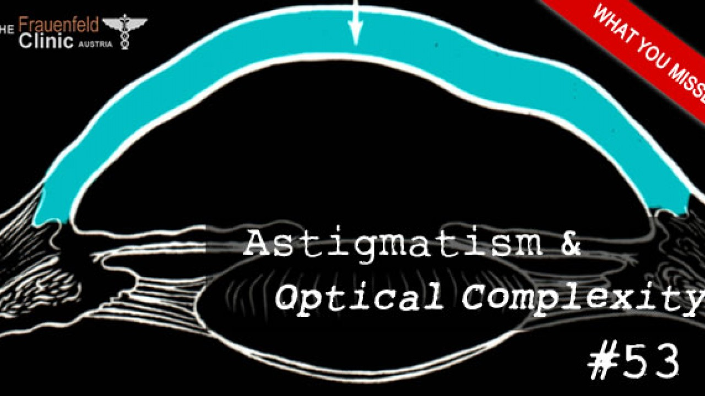
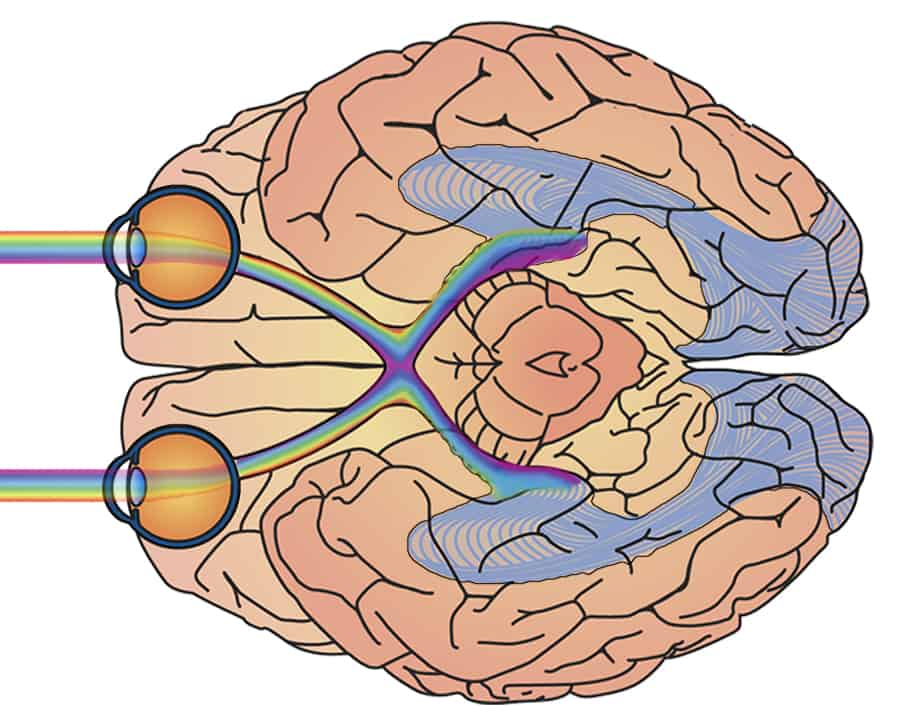
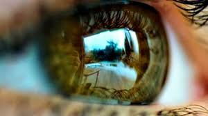
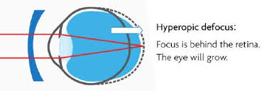
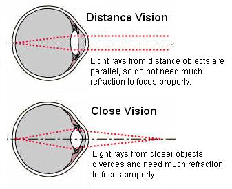
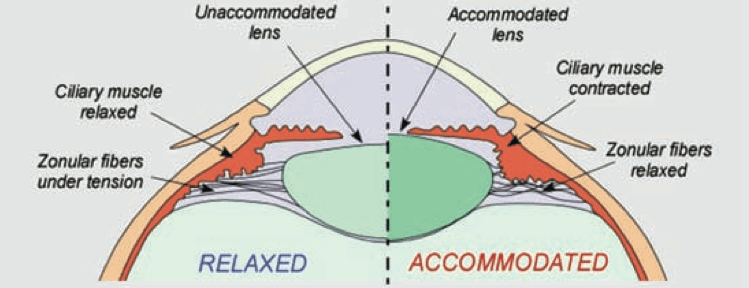
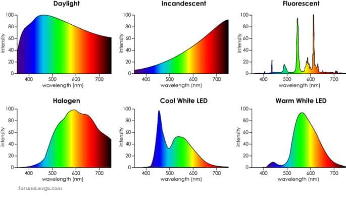
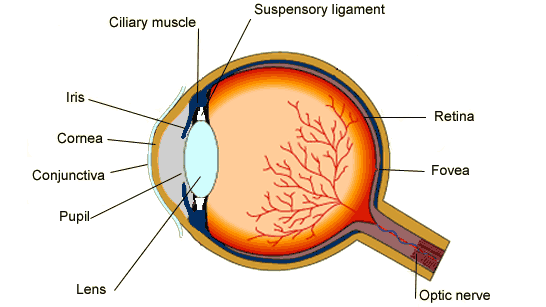
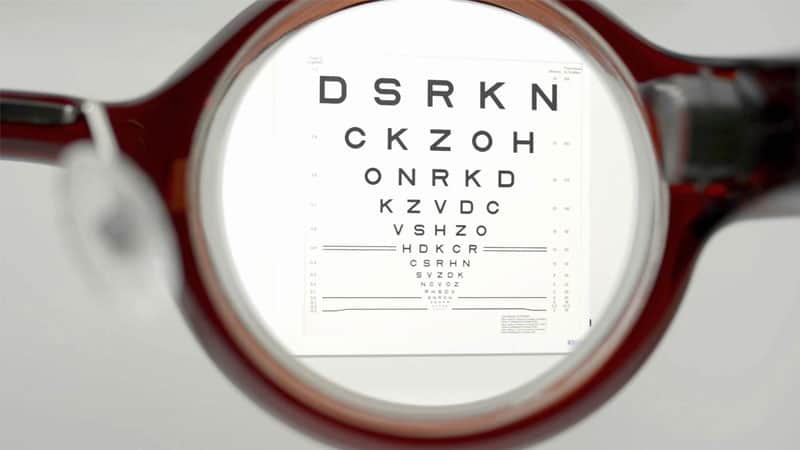
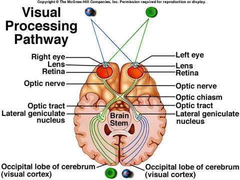

Fig.1 - astigmatism si complexitate optica

Fig.2 - ochiul uman si visual cortexul ochi

Fig.3 - ochi
Fig.4 - contrast si miopie -

Fig.5 - defocus hiperopic - cauza miopiei progresive -

Fig.6 - vedere in distanta si vedere in apropiere

Fig.7 - acomodarea lentilei oculare -

Fig.8 - surse de lumina -
Fig.9 - prescriere optica medicala -

Fig.10 - biologie ochi uman -
Fig.11 - ochelari -

Fig.12 - corectie cu dioptrii -

Fig.13 - procesare vizuala -